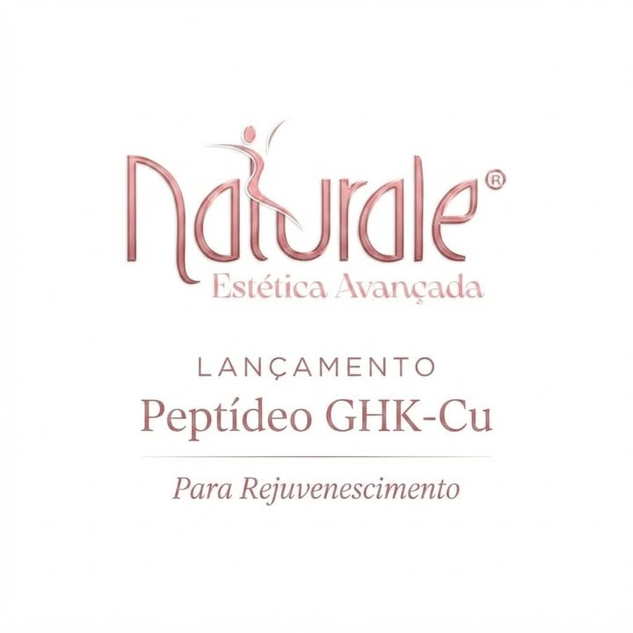
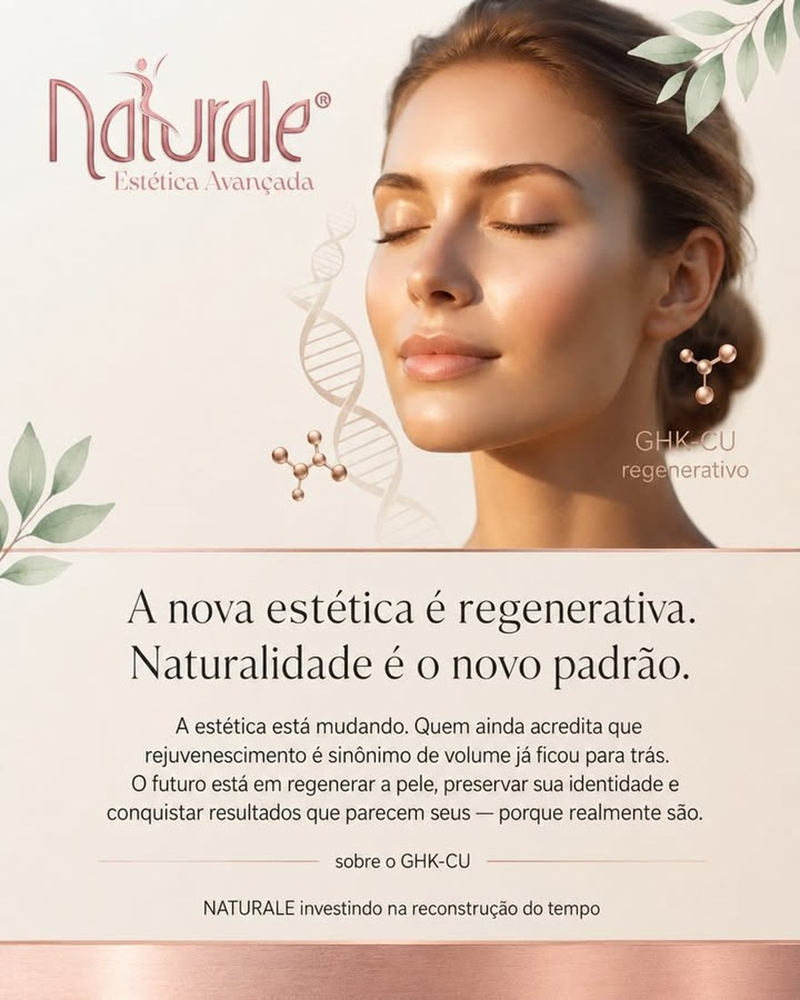
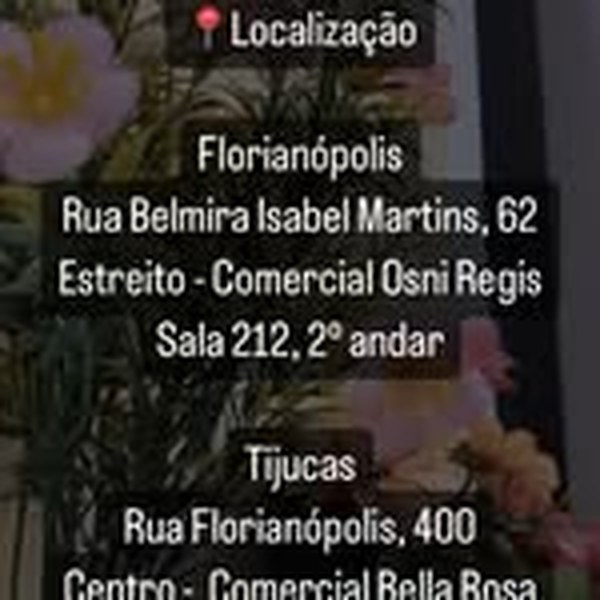

Botox
Planejamento para suavização de linhas de expressão conforme avaliação profissional.
Estética avançada em Florianópolis e Tijucas
Cuidado facial e corporal com avaliação individual, orientação clara e atendimento pensado para quem busca naturalidade, segurança e acolhimento.

Presença oficial
A Naturale reúne protocolos faciais e corporais, atendimento em Florianópolis e menção pública à unidade de Tijucas. O agendamento é feito pelo WhatsApp oficial informado no Instagram da clínica.
Protocolos
O site organiza os procedimentos mencionados publicamente pela Naturale, sem substituir consulta, diagnóstico ou análise individual.
Planejamento para suavização de linhas de expressão conforme avaliação profissional.
Protocolos de contorno e hidratação com foco em equilíbrio facial e naturalidade.
Leitura global do rosto para combinar recursos de forma estratégica e conservadora.
Cuidado voltado à qualidade da pele, hidratação e viço, quando houver indicação.
Protocolos voltados ao estímulo progressivo de colágeno e melhora de firmeza.
Atendimento corporal personalizado, sempre partindo de avaliação e expectativa realista.
Como funciona

O que aparece publicamente
Abrir perfil no Google Maps“Toda a equipe é muito atenciosa e me sinto muito bem cuidada em cada visita.”
Avaliação pública no Google Maps
Unidade Florianópolis
Rua Belmira Isabel Martins, 62, sala 212, Estreito, Florianópolis, SC, 88075-145.

A unidade de Tijucas aparece nos canais sociais da marca. Confirme endereço e disponibilidade pelo WhatsApp antes de se deslocar.
Agendamento
Preencha os campos para abrir o WhatsApp oficial com uma mensagem pronta. O envio acontece apenas quando você confirmar no WhatsApp.